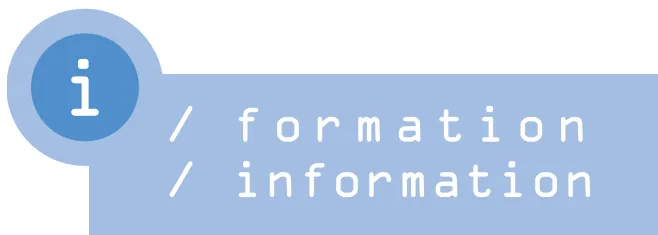

Laurent Jouffroy, clinique du Diaconat,
Strasbourg. Fax : 03 88 25 71 33
laurent.jouffroy@wanadoo.fr
Charles.C. Arvieux, hôpital de la Cavale
Blanche, Brest. Fax : 02 98 34 78 49
Charles.Arvieux@univ-brest.fr
au sommaire
Recommandations de bonnes pratiques cliniques concernant
l'application de la loi n° 2005-370 du 22 avril 2005 relative
aux droits des malades et à la fin de vie
A. Lienhart, L. Puybasset, S. Beloucif, G. Boulard, pour le groupe de réflexion
éthique de la Sfar ..... 912
AGENDA ..... 918
A. Lienhart1,*, L. Puybasset, S. Beloucif, G. Boulard, pour le groupe réflexion éthique de la Sfar2
2 Membres du groupe : M. Alazia, E. Balagny, J.-E. Bazin, S. Beloucif, C. Cohen, A. de La Dorie-leroy, B. Eon, E. Ferrand, R. Gauzit, L. Jacob, A. Lienhart, J.L. Pourriat, L. Puybasset, P.-Y. Quiviger, J.-P. Tarot, et le président de la Sfar, C. Martin.
* Correspondant : André Lienhart (andre.lienhart@sat.aphp.fr)
1 Département d'anesthésie-réanimation, Hôpital Saint-Antoine, Assistance Publique-Hôpitaux de Paris, 184 rue du Faubourg St Antoine, 75012 Paris, Université Pierre et Marie Curie.
* Texte validé par le Conseil d'administration de la Sfar du 30 juin 2006.
La loi à laquelle se réfèrent ces recommandations1 s'appuie schématiquement sur deux grands principes : l'un, positif, donne à la personne malade de nouveaux droits, opposables à une obstination de la part des médecins qu'il jugerait déraisonnable ; l'autre est négatif : le code pénal n'établit pas de distinction en matière d'homicide volontaire, y compris pour l'euthanasie2.
Les nouvelles dispositions légales diffèrent selon que la personne malade est en état d'exprimer sa volonté ou ne l'est pas. Lorsque la personne est en état d'exprimer sa volonté, le principe d'autonomie est étendu aux situations où l'abstention thérapeutique peut aboutir au décès, ce qui exonère le praticien de sanctions pénales au motif de la non-assistance à une personne en péril. Ce droit des malades est accompagné d'une obligation pour le praticien d'informer sur les risques de la décision et de respecter un temps de réflexion (ce qui exclut les situations d'urgence vitale, en matière de transfusion par exemple, confortant ainsi la jurisprudence du Conseil d'État), ainsi que de la possibilité de faire appel à un autre médecin.
Lorsque la personne n'est pas en état d'exprimer sa volonté, la responsabilité de la limitation de traitements incombe au praticien en charge du patient, ce qui évite de faire peser cette lourde décision sur la famille ou des proches. Ce praticien a l'obligation de respecter une procédure collégiale, précisée par l'article 37 du Code de déontologie médicale. Il s'agit d'abord de recueillir les manifestations de la volonté qu'aurait antérieurement exprimée le patient, au travers de directives anticipées et du témoignage de la personne de confiance qu'il aurait désignée ou, à défaut, de sa famille ou de ses proches, puis d'établir un consensus au sein de l'équipe médicale et paramédicale. En définitive, la décision est prise par le médecin en charge du patient sur l'avis motivé d'au moins un autre médecin, appelé en qualité de consultant et avec lequel il n'a pas de lien de nature hiérarchique. L'avis motivé d'un deuxième consultant est demandé par ces médecins si l'un d'eux l'estime utile. Dans tous les cas, l'ensemble des démarches doit figurer dans le dossier médical. Lorsque ces conditions sont remplies, la loi offre sa garantie au médecin selon l'article 122-4 du Code pénal, qui dispose dans son premier alinéa : « N'est pas pénalement responsable la personne qui accomplit un acte prescrit ou autorisé par des dispositions législatives ou réglementaires. »
1 Les textes de la loi et de ses décrets d'applications modifiant le code de la santé publique sont disponibles sur le site Internet de la Sfar (http://www.sfar.org/s/IMG/pdf/loifdv2005-380.pdf), après avoir été replacés dans leur contexte afin d'en faciliter la lecture (version consolidée), avec le rappel des articles nécessaires à leur compréhension.
2 L'article 221-1 du code pénal est ainsi rédigé : « Le fait de donner volontairement la mort à autrui constitue un meurtre. Il est puni de trente ans de réclusion criminelle », tandis que l'article 221-3 de ce même code dispose dans son premier alinéa : « Le meurtre commis avec préméditation constitue un assassinat. Il est puni de la réclusion criminelle à perpétuité. »
Ces recommandations concernent les soins aux personnes en phase avancée ou terminale d'une maladie et les traitements devenus vains, c'est-à-dire disproportionnés ou n'ayant d'autre effet que « le seul maintien artificiel de la vie. »
Leur ensemble ne concerne donc pas les soins aux personnes n'étant pas dans cette situation, même si certaines décèdent en dépit des soins et si nombre des principes sont d'application générale.
La loi citée faisant appel à la notion d'obstination et impliquant des délais avant une décision mettant en danger la vie du patient, les urgences vitales imprévues se trouvent, de fait, placées en dehors de son champ3. De telles urgences, dès lors qu'elles ne résultent pas d'une situation anticipée, restent donc dans le cadre plus général des soins4, impliquant les principes d'utilité, d'équité et de proportionnalité, dans le cadre de l'article 8 du code de déontologie médicale et du premier alinéa de son article 37. L'exemple peut être donné d'une accouchée, d'un traumatisé, qui refuseraient une transfusion : le médecin doit tout mettre en œuvre pour convaincre mais, s'il n'y parvient pas et qu'il s'agit d'une détresse vitale, il ne peut lui être reproché d'avoir entrepris la réanimation5. L'exception liée à l'urgence est déjà inscrite dans le code de la santé publique, notamment à l'article L. 1111-2 pour ce qui concerne le devoir d'information6.
En revanche, lorsqu'il s'agit d'une maladie chronique pour laquelle une acutisation est prévisible, il y a lieu d'encourager le processus de réflexion, ce qui peut amener le patient à rédiger des directives anticipées.
Les modalités d'application de la loi citée diffèrent selon que les personnes sont ou ne sont pas en état d'exprimer leur volonté.
L'expression de la volonté implique que
Le médecin met à la disposition de cette personne les éléments permettant à celle-ci de prendre sa décision en pleine connaissance de cause. Il lui explique notamment, avec tact et progressivité, les conséquences prévisibles de sa décision, quelle qu'elle soit. Le médecin met tout en œuvre pour convaincre le patient de poursuivre les traitements qui lui paraissent indispensables d'un point de vue médical. Il ne doit notamment pas se sentir dégagé de son obligation de tout mettre en œuvre pour convaincre le patient dès le premier refus de celui-ci.
Les recommandations générales de l'article 35 du code de déontologie médicale s'appliquent avec force à cette situation : « Le médecin doit à la personne qu'il examine, qu'il soigne ou qu'il conseille une information loyale, claire et appropriée sur son état, les investigations et les soins qu'il lui propose. Tout au long de la maladie, il tient compte de la personnalité du patient dans ses explications et veille à leur compréhension. »
3 Article L. 1111-4 : « Si la volonté de la personne de refuser ou d'interrompre tout traitement met sa vie en danger, le médecin doit tout mettre en œuvre pour la convaincre d'accepter les soins indispensables. Il peut faire appel à un autre membre du corps médical. Dans tous les cas, le malade doit réitérer sa décision après un délai raisonnable. » Le rapporteur de la loi a indiqué lors du débat à l'Assemblée nationale, pour repousser un amendement visant à fixer une limite supérieure d'un mois : « fixer un délai pourrait avoir l'effet inverse [...] et conduire les médecins à attendre un mois alors que quelquefois le délai raisonnable est en réalité de quelques jours. »
4 SFMU Juin 2003. Ethique et urgences : Réflexions et recommandations (http://www.sfmue.org/documents/consensus/rbpc_ethique.pdf)
5 Le rapporteur de la loi a indiqué lors du débat à l'Assemblée nationale : « Autant on a le droit de transfuser contre son avis le malade qui est témoin de Jéhovah et qui risque de mourir aux urgences, autant on n'a pas le droit d'imposer indéfiniment l'alimentation artificielle à quelqu'un qui la refuse. (Applaudissements) »
6 Article L. 1111-2 : « Toute personne a le droit d'être informée sur son état de santé. ... Cette information incombe à tout professionnel de santé.... Seules l'urgence ou l'impossibilité d'informer peuvent l'en dispenser. »
Le médecin doit finalement s'incliner devant la volonté de la personne de refuser un traitement, même si cette abstention est susceptible d'abréger sa vie. Il doit préalablement s'être assuré que :
Le refus de traitement, dans les conditions précisées dans les paragraphes précédents, peut être partiel ou total.
La loi prévoit que la personne peut refuser « tout traitement », quel qu'il soit. Ceci inclut la ventilation mécanique, la dialyse, l'alimentation ou l'hydratation artificielles. Dans tous ces cas, les soins d'hygiène et de confort sont poursuivis comme chez tout patient. Le médecin propose des soins d'accompagnement abordés dans un paragraphe ultérieur. Les données médicales disponibles indiquent que la mort qui résulte d'un arrêt de l'alimentation ou de l'hydratation artificielles est généralement estimée paisible par l'entourage et les soignants dès lors que les soins d'accompagnement administrés au patient sont adaptés8.
Le médecin s'assure de l'efficacité du traitement de toute souffrance. La posologie des morphiniques ou des sédatifs est adaptée à la variabilité de la réponse individuelle. L'utilisation d'une titration et d'une échelle de la douleur permet de soulager la souffrance sans donner intentionnellement la mort. Il n'en reste pas moins que le niveau de soulagement à atteindre est soumis à la seule appréciation de la personne en état d'exprimer sa volonté.
L'inscription au dossier médical comporte :
La décision de limitation de soins est accompagnée :
7 Il n'est cependant pas possible de fixer un délai rigide, le contexte psychologique et celui de la pathologie devant être pris en considération. Généralement, il s'agit de jours. Comme indiqué en préambule, ceci exclut l'urgence dans un contexte où le traitement n'apparaîtrait pas disproportionné au pronostic (telle une hémorragie après un accouchement).
8 Ganzini L, Goy ER, Miller LL, Harvath TA, Jackson A, Delorit MA. Nurses' experience with hospice patients who refuse food and fluids to hasten death. N Engl J Med 2003;349:359-65
Il peut s'agir de personnes dans le coma : leur évaluation requiert l'arrêt de la sédation si la situation médicale le permet9. Il peut s'agir également de personnes dont l'autonomie de jugement ne peut être retenue comme valide (cf. § 1.a).
Cette démarche se conçoit exclusivement dans l'intérêt de la personne malade. Elle peut être remise en question à tout moment à la faveur d'éléments nouveaux.
Elle peut être initiée par l'entourage du patient ou par tout acteur de soins. Elle suppose un temps de préparation, de réflexion, de consultation et de mise en œuvre, tant auprès de l'entourage du patient que de l'équipe soignante.
Elle concerne des patients dont le pronostic est connu, les séquelles irréversibles et d'une exceptionnelle gravité. Ceci nécessite d'avoir réuni les avis spécialisés éventuellement nécessaires et réalisé les investigations paracliniques à visée pronostique.
Une décision de limitation ou d'arrêt de traitements ne peut être prise qu'après mise en œuvre d'une procédure collégiale. Pour la mise en œuvre de celle-ci, il est souhaitable que chaque unité de soins adopte un protocole général écrit. Les éléments généraux développés ci-après sont proposés dans ce but.
La procédure collégiale est conduite par le praticien en charge du patient, qui ne peut être en cours de formation. Elle peut se décrire en trois étapes, destinées à fournir le maximum de garanties : recherche des témoignages de l'avis du patient lorsqu'il était en état d'exprimer sa volonté ; concertation au sein de l'équipe de soins et avec des médecins connaissant le patient ; appel à un consultant extérieur avant la décision.
Lorsqu'il existe des directives anticipées,
Lorsque, malgré les recherches, notamment auprès des personnes susceptibles de connaître leur existence, il apparaît qu'il n'existe pas de directives anticipées, le praticien recherche auprès de la personne de confiance ou, à défaut, auprès de la famille ou des proches, ce que le patient aurait souhaité, soit explicitement, soit au travers de ses convictions.
Lorsque la décision concerne un mineur ou un majeur protégé, le médecin recueille en outre, selon les cas, l'avis des titulaires de l'autorité parentale ou du tuteur.
9 Cet arrêt est essentiel pour évaluer l'état d'un patient atteint d'une pathologie neurologique, une fois la phase d'hypertension intracrânienne passée. Il peut en revanche s'avérer impossible dans certains cas, par exemple chez un patient qui serait en défaillance multiviscérale dans les suites d'une chirurgie digestive lourde, pour laquelle l'abdomen aurait dû être laissé en partie ouvert pour drainage de collections septiques.
tel l'hématologue, le chirurgien ou l'anesthésiste-réanimateur ayant pris en charge le patient avant son transfert en réanimation).
En présence de directives anticipées circonstanciées et d'une personne de confiance à même de les éclairer, seuls des arguments médicaux forts peuvent y faire obstacle. Il est en effet possible d'apprécier sans trop de difficulté ce qu'aurait été la volonté de la personne malade si elle avait été en état de l'exprimer. Ces conditions sont actuellement rarement réunies. Ceci est une incitation à favoriser leur émergence, tant auprès des médecins d'autres disciplines que de l'ensemble de la société.
En leur absence, la seule solution consiste à rechercher la décision la plus raisonnable du point de vue médical, en respectant la procédure décrite ci-dessus, en prenant en compte le contexte familial et social, la souffrance de l'entourage, et en s'assurant que le dialogue instauré permet à cet entourage de comprendre les motifs des décisions.
La décision peut être :
La question de l'arrêt de l'alimentation et de l'hydratation artificielles peut se poser. D'un point de vue éthique et juridique, une personne hors d'état d'exprimer sa volonté (par exemple en état végétatif persistant) ne saurait être privée de la possibilité d'arrêter un traitement, quel qu'il soit, comme elle aurait pu l'exiger si elle en avait eu la capacité. Toutefois, la difficulté de la mise en œuvre d'une telle suspension et la complexité de la décision imposent des précautions toutes particulières, notamment à l'égard de l'entourage de la personne malade, de façon à ce qu'il n'existe pas de doute raisonnable sur ce qu'aurait été la volonté de cette personne si elle avait été en état de l'exprimer. Ce type de décision nécessite le consensus le plus large possible de la famille, des proches et des soignants. Comme pour le patient en état d'exprimer sa volonté, les soins d'hygiène et de confort sont poursuivis et des soins d'accompagnement sont adaptés à cette situation10.
L'inscription au dossier médical comporte :
L'inscription dans le dossier du patient des consultations auxquelles le médecin a procédé et des motifs de la décision est une obligation réglementaire11. Elle est à ce titre une condition indispensable à l'exonération de responsabilité pénale.
10 Anaes. Décembre 2002. Modalités de prise en charge de l'adulte nécessitant des soins palliatifs (http://www.anaes.fr)
11 Article R. 4127-37 du code de la santé publique, modifiant le code de déontologie médicale.
Comme pour le patient en état d'exprimer sa volonté, la décision est accompagnée :
La Fondation Européenne d'Enseignement en Anesthésiologie (FEEA) organise dans plus de 80 centres régionaux en Europe, Amérique Latine, Afrique et Asie des cours d'enseignement post universitaire en anesthésie réanimation.
Le comité de direction est constitué de P. Scherpereel (Lille), Président, M. Lamy (Liège), C. Gomard (Barcelone), A. Steib (Strasbourg).
Le programme comporte un cycle de six cours portant sur l'ensemble de l'anesthésie et de la réanimation. Chaque cours, sous forme de séminaire résidentiel, a une durée de deux jours et demi et comprend des conférences suivies de discussion, des cas cliniques, des ateliers ou des échanges sur un thème. Une évaluation des participants et des enseignants est systématique. Un dossier pédagogique est remis aux participants avant chaque cours.
Les thèmes des six cours sont :
Cours 1 : Respiration et thorax
Cours 2 : Appareil cardiovasculaire
Cours 3 : Soins intensifs, rein, médecine d'urgence, sang et transfusion
Cours 4 : Mère enfant
Cours 5 : Système nerveux, anesthésie locorégionale et traitement de la douleur
Le cycle peut être commencé par n'importe quel cours. Les frais de participation comprennent le volume de préparation du cours, le cours lui-même, les repas et de façon optionnelle l'hébergement.
Plus de détails peuvent être trouvés sur le site de la FEEA : http://www.feaa.net et son site d'enseignement à distance www.euroviane.net
La Chartreuse du Val Saint-Esprit - Gosnay (Pas de Calais)
18-20 septembre 2006
Cours 2 : Cardiovasculaire, sang et transfusion
9-11 octobre 2006
Cours 6 : Anesthésie pour différents types de chirurgie
Comité scientifique : Pr M. De Kock (Louvain), Pr J. Joris (Liège), Pr Van Der Linden (Bruxelles), Pr B. Tavernier (Lille), Pr B. Vallet (Lille), Pr G. Lebuffe (Lille)
Responsables : Pr G. Lebuffe, clinique d'anesthésie-réanimation, hôpital Claude-Hurie, Rue Michel Polonovski, 59037 Lille cedex, France
Tél : 03 20 44 61 44 - Fax : 03 20 44 63 65
E-mail : g-lebuffe@chru-lille.fr
9-10 octobre 2006, Hôtel Aletti, Vichy
Cours 3 : Soins intensifs, médecine d'urgence, transfusion sanguine
Responsables : Pr C. Auboyer, département d'anesthésie-réanimation, hôpital Nord, CHU, 42055 Saint-Étienne cedex 2.
Tél : 04 77 82 83 29. Fax : 04 77 82 84 50.
E-mail : christian.auboyer@univ-st-etienne.fr
Pr P. Schoeffler, département d'anesthésie-réanimation, hôpital Gabriel-Montpied, 30, place Henri-Dunant, 63003 Clermont-Ferrand cedex. Tél : 04 73 75 15 90. Fax : 04 73 75 15 91.
E-mail : pschoeffler@chu-clermontferrand.fr
Inscriptions : Agence MO, 20 rue la Varenne, 63122 Ceyrat
Tél : 04 73 61 51 88 – E.mail : agence.mo@wanadoo.fr
7-9, décembre 2006, Sophia-Antipolis (Nice)
Cours 5 : Anesthésie locorégionale et traitement de la douleur
Responsables : Pr D. Grimaud et C. Ichai, département d'anesthésie-réanimation-Est, hôpital Saint-Roch, BP 1319, 06006 Nice cedex 1
Tél. : 04 92 03 33 00 – Fax : 04 92 03 35 58
E-mail : dar-est@chu-nice.fr ; ichai@unice.fr
The 11th Annual Advance Interventional Pain Conference and practical Workshop an FIPP Examination Preparation Course
The 8th Examination
Secretariat : Kenes International, 17 rue du cendrier, PO Box 1726, CH-1211 Genève 1. Suisse
Tel. : 41 22 908 0488 – Fax : 41 22 732 28 50
E-mail : wip06@kenes.com
Website : www.kenes.com/wip06
VIIe Congrès national d'hémovigilance et de sécurité transfusionnelle
Ces journées se composent de séances de formation, d'ateliers, de conférences d'actualisation, de tables rondes et de séances de communications libres et posters.
Renseignements : Europa Organisation, 5 rue Saint-Pantaléon – BP 61508, 31015 Toulouse cedex 6, France
Tél. : 05 34 45 26 45 – Fax : 05 34 45 26 46
E-mail : insc-sfvtt@europa-organisation.com
Date limite de soumission des résumés : 30 juin 2006
■ 16 et 17 novembre 2006, Europôle centre de Congrès, Grenoble
28e Journées de l'Association de neuro-anesthésie réanimation de langue française (Anarlf)
Thème : Hémorragie sous-arachnoïdienne
Renseignements : Mme Vayr, Secrétariat du département d'anesthésie-réanimation 1, hôpital Michallon, BP 217, 38043 Grenoble cedex
Tél. : 04 76 76 56 35 – fax : 04 76 76 51 83
E-mail : jvayr@chu-grenoble.fr
■ 24-25 novembre 2006, Lyon-Bron
13es Journées d'informations cliniques en anesthésie-réanimation (ICAR)
Thèmes : Quelques problèmes posés à l'anesthésie par le patient. Quoi de neuf en réanimation et urgences en 2006 ? Evaluation des pratiques professionnelles (EPP) : implication pour l'anesthésiste-réanimateur; Evaluation en 2006 : que reste-t-il à faire ? Evaluation préopératoire : questions- réponses.
Renseignements : Mme Elisabeth Morel
Tél. : 04 78 86 57 56 – Fax : 04 78 86 57 14
E-mail : elisabeth.morel-chevillet@chu-lyon.fr
Inscriptions : Annie Meriot
Tél. : 04 78 86 19 88 – Fax : 04 78 86 59 33
E-mail : annie.meriot@chu-lyon.fr
■ 25-26 novembre 2006, Rennes
Congres AGORA/Journées Rennaises d'anesthésie-réanimation
Thèmes : vidéotransmission anesthésie locorégionale et échographie, anesthésie locorégionale, douleur postopératoire, anesthésie générale et soins périopératoires, session professionnelle, ateliers anesthésie locorégionale, anatomie, intubation difficile
Responsable Comité scientifique : cEcoffey.rennes@invivo.edu
Renseignements et inscriptions : MCO Congrès, 27 rue du Four à Chaux, 13007 Marseille
Tél. : 04 95 09 38 00 – fax. : 04 95 09 38 01
E-mail : c.schwob@mcocongres.com
■ Centre francophone de formation en échographie, 2006
Le séminaire dispense une formation intensive sur 4 jours à Nîmes, délibérément orientée vers l'utilisation pratique de l'échographie en urgence avec apprentissage du Programme Rapide d'Échographie du Polytraumatisés (PREP).
Il comporte différentes techniques de formations, centrées sur la réalisation pratique d'examens échographiques
Enseignement par petits groupes de trois médecins autour d'un échographe. Chacun servant, tour à tour, de mannequin et jouant le jeu de l'enseignement réciproque :
- 7-9 décembre 2006
Des sessions seront organisées en 2006 à Compiègne (France), à la Martinique, aux Pays-Bas, en Belgique, en Espagne... nous contacter pour ces sessions.
48e CONGRÈS NATIONAL
D'ANESTHÉSIE ET DE RÉANIMATION
27-30 septembre 2006
Palais des Congrès de Paris
Début du Congrès : mercredi 27 septembre
Journée des clubs : mercredi 27 septembre
Journée médecine d'urgence : mercredi 27 septembre
Journée douleur-ALR : mercredi 27 septembre
Journée des infirmier(e)s d'urgence : mercredi 27 septembre
Communications libres : jeudi 28 septembre
Journée des infirmier(e)s de réanimation : jeudi 28 septembre
Journée des infirmier(e)s d'anesthésie : vendredi 29 et samedi 30 septembre
Conférences, débats, tables rondes, ateliers, cas cliniques, controverses, sessions à thème, essentiels : vendredi 29 et samedi 30 septembre
Clôture du Congrès : samedi 30 septembre
Vous pouvez vous inscrire en ligne sur le site de la Sfar
www.sfar.org
Merci de vous munir de votre numéro d'adhérent lors de l'enregistrement.
Date limite d'inscription sans majoration des droits : 30 juillet 2006
Renseignements congrès
COLLOQUIUM
12, rue de la Croix Faubin, 75557 Paris cedex 11
Tél. : 01 44 64 15 15 – Fax : 01 44 64 15 16
E-mail : sfar2006@colloquium.fr
(succession + création)
Région CENTRE
. Nous exerçons notre art au sein d'une équipe
médico-chirurgicale (139 lits et places)
SANS METERNITE ni SERVICE D'URGENCES.
. Vous entrerez dans notre SCP et bénéficierez d'un partage
d'honoraires sans achat de parts. L'équipe d'anesthésistes est
complétée par 2 IADE.
. Vous bénéficierez d'un Plateau Technique des plus modernes et
d'un équipement de haute technologie.
Nous vous proposons de recevoir une fiche détaillée sur ce poste dès
réception de votre candidature «manuscrite, CV et photo) auprès de notre
cabinet de recrutement, sous référence 060203 à
CFPS
342, Route d'Unias - 42210 CRAINTILLEUX
La Clinique de la Plaine à
Genève
Recherche
UN Anesthésiste
dépendant (60-100 %)
avec un diplôme FMH
ou équivalent pour le 1er septembre
Merci d'envoyer votre dossier avec les documents usuels à :
Clinique de la Plaine - Mme Roncari
Rue Charles-Humbert 5 - 1205 Genève
Tél.: 00 41 22 595 05 05
E-mail : direction@laplaine.ch
clinique region
languedoc-roussillon
recherche
Notre Etablissement, très bien situé géographiquement (à 20
minutes de la mer), est accrédité sans réserve ni recommandation.
Notre équipe est prête à vous accueillir.
Nous vous vous proposons de recevoir une fiche détaillée sur ce
poste dès réception de votre candidature et lettre manuscrite,
CV et photo auprès du cabinet de recrutement ci-dessous,
sous référence 040905.
CFPS
Cabinet Français des Professions de Santé
Marie-Christine CHARBONNIER
Tél.: 04 77 06 10 35 - Fax : 04 77 06 10 39
e-mail : mc.charbonnier@wanadoo.fr
Etablissement MCO - PSPH
Recrute dans le cadre de son redimensionnement
temps plein ou temps partiel
Activité salariée - Rémunération CCN FEHAP du 31 octobre 1951
Possibilité de détachement pour les praticiens hospitaliers
Adresser CV et candidatures à Monsieur Le Directeur
HOPITAL JOSEPH DUCUING
15, rue Varsovie - 31076 TOULOUSE CEDEX 3
Tél.: 05 61 77 34 82 - Télécopie 05 61 59 81 22
mail : direction@hjd.asso.fr